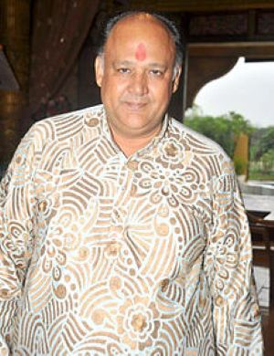
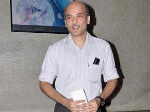
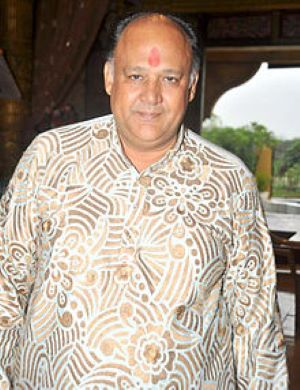
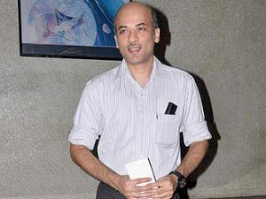

Maine Pyaar Kiya
About
Maine Pyar Kiya is a 1989 Hindi-language musical love story film directed by Sooraj Barjatya. Starring Salman Khan and Bhagyashree in lead roles. It was produced by Rajshri Productions. It was Sooraj's directorial debut, Salman's first leading role (after a supporting role in the previous year's Biwi Ho To Aisi) and Bhagyashree's film career.
It was the top-grossing Bollywood film of 1989 and the highest-grossing Indian film of the 1980s. The soundtrack album of this film was also the best-selling Bollywood music album of the 1980s. At the 35th Filmfare Awards, the film won six awards including Best Film.
Budget ₹2 crore
Box office ₹28 crore
Cast
 


